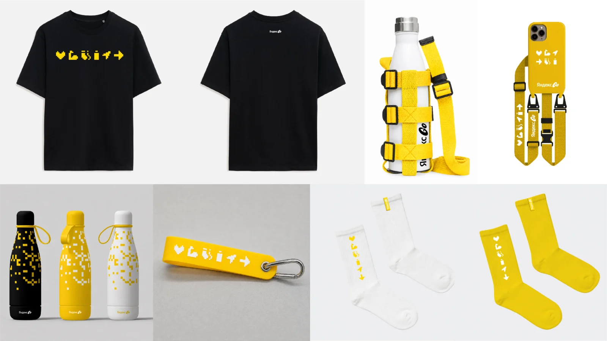
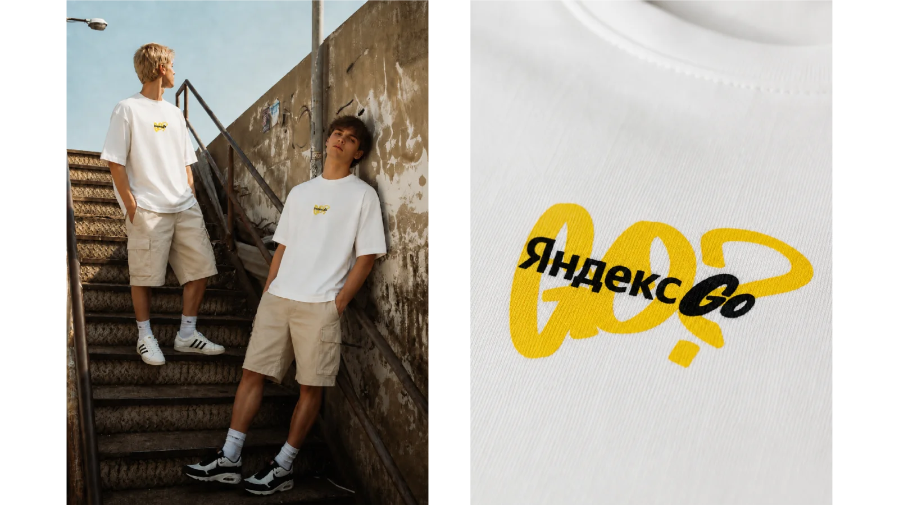
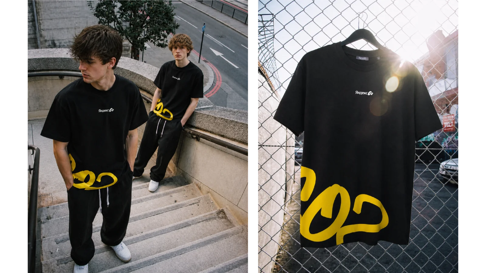
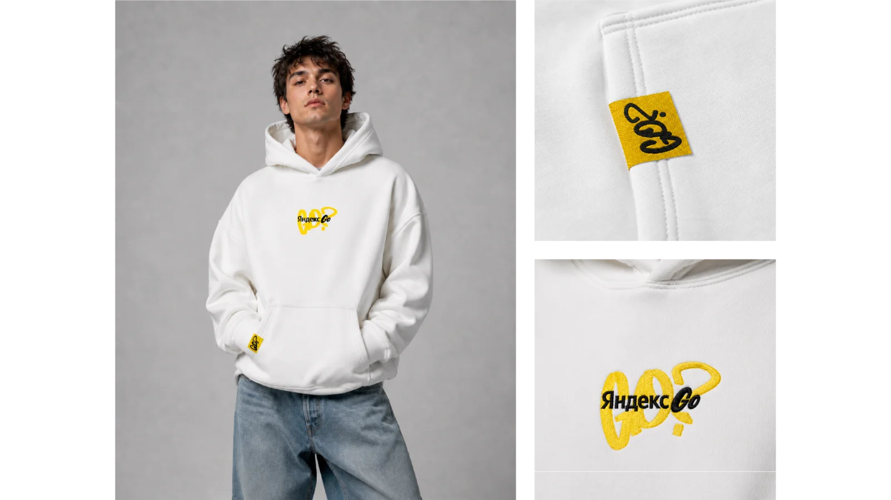
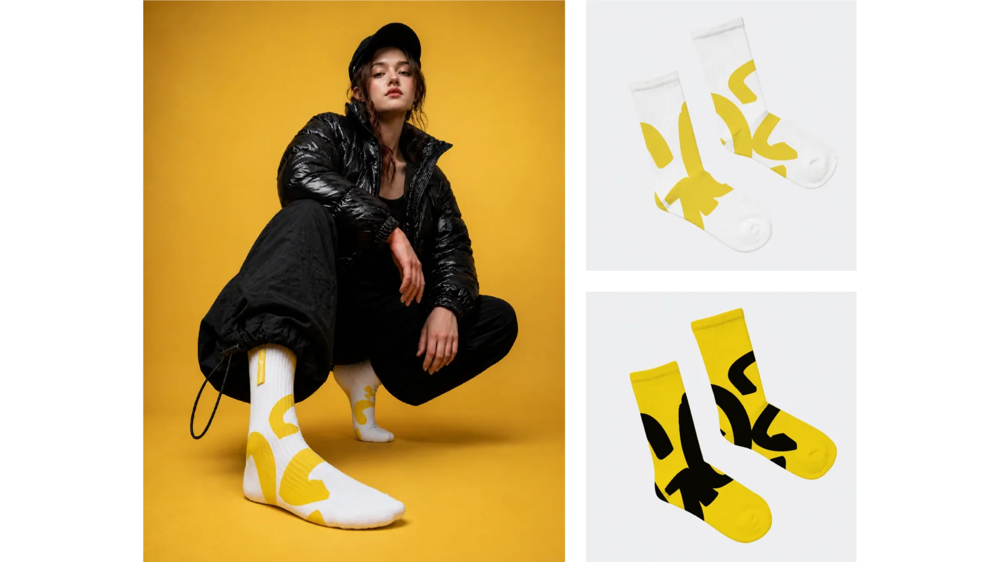
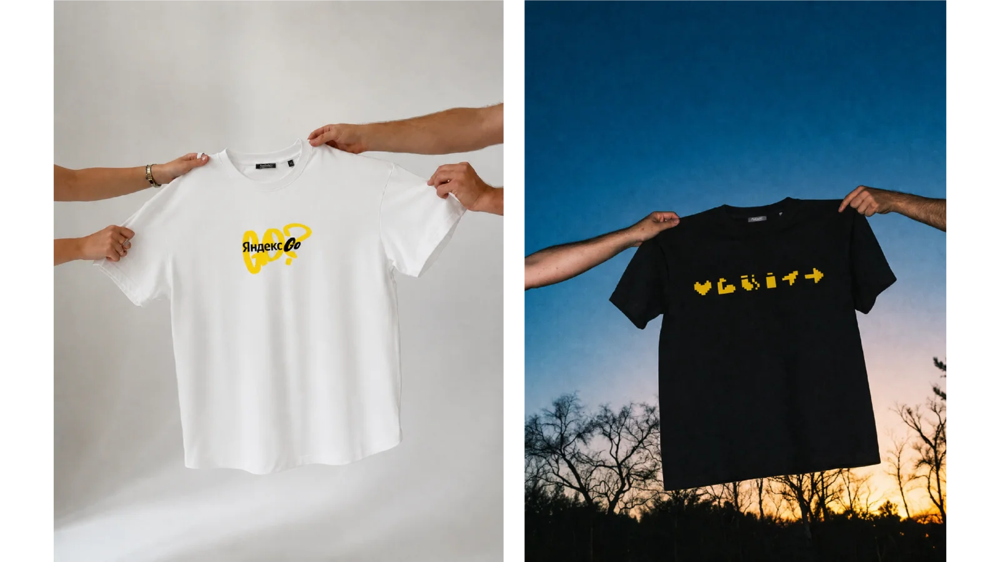
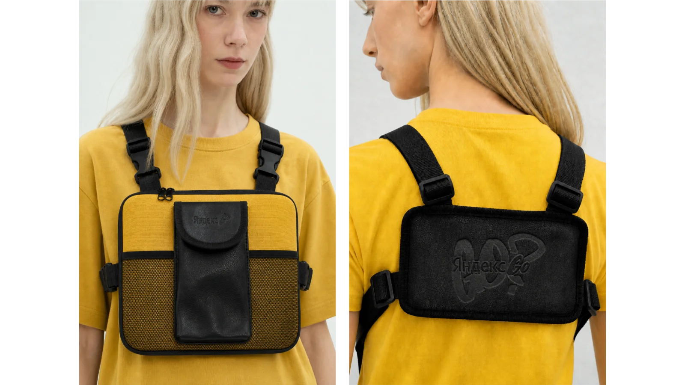
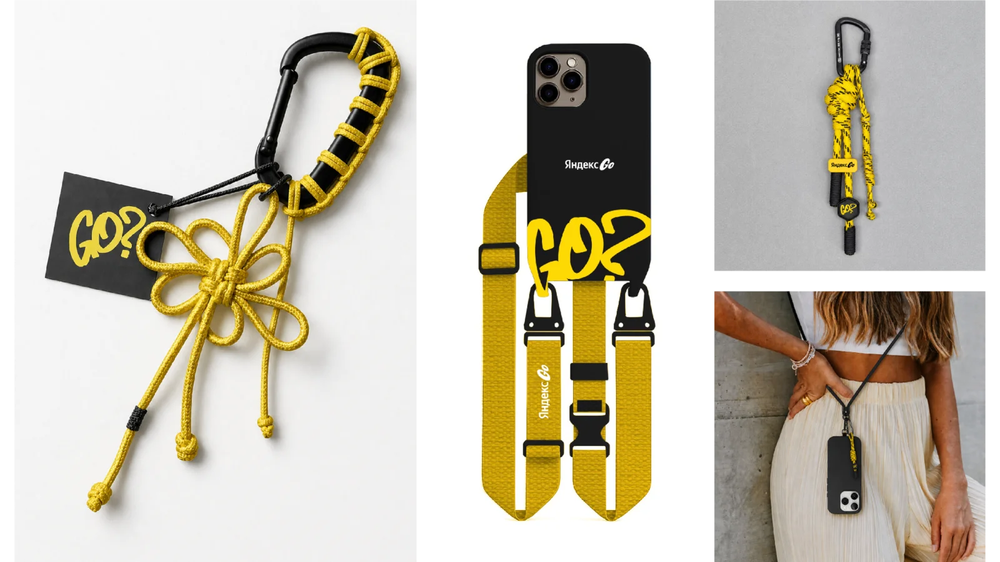
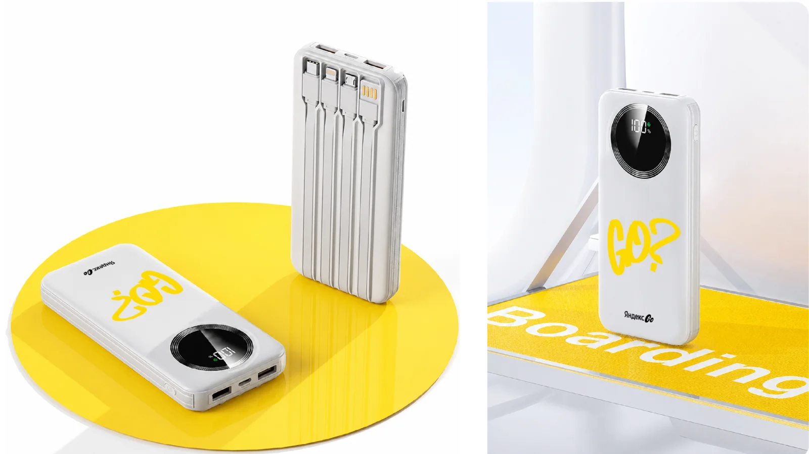

Задача
Разработать оформление для одежды и аксессуаров, которые уже были выбраны для коллекции.
Концепция стритвир-коллекции для одежды и аксессуаров.

Разработать оформление для одежды и аксессуаров, которые уже были выбраны для коллекции.
Самостоятельно разработал визуальную концепцию по брифу и адаптировал графику под разные носители.
Взял за основу граффити и использовал его как акцент в минималистичной стритвир-коллекции. Рукописный тег и пиксельные пиктограммы связывают одежду с аксессуарами в жёлтой, чёрной и белой гамме.
Посмотреть коллекцию на Behance






